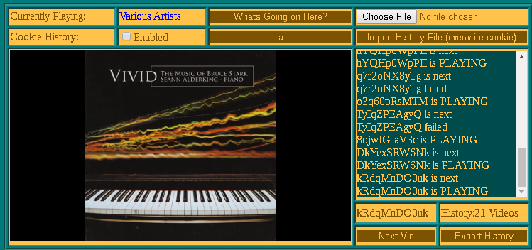

Calvin Houser
Personal Projects
Smorgasbord
A utility for organizing, cataloging, and visualizing web browsing. Smorgasbord tracks the current state of all active browser windows and can save each link and associated visit to its database. On the Active Windows page, each visited link can be tagged and saved. Once a link is tagged each visit is saved and visible on the Recent Visits page. On the Timeline Graph page, saved links, tags, and the visits to them can be visualized in a network graph. Runs on a Flask Server interfacing with a browser WebExtension.
Deduplicator
Command line tool to summarize file tree information and provide macros for deduplication. Full usage documentation in the project README.
Arduino Synth

A Digital Synthesizer running on an atmega328p with scrap I/O components. Built using the Mozzi Sound Library for Arduino.
Youtube DJ
 repository | demo
A web interface built for aggregating and randomly playing syndicated music on youtube. A private page is used for scraping the video IDs of a channel or playlist using the Youtube API and saving the IDs to a file. A public page then is used to randomly play videos in continuously from the list in an embedded iframe.
Small Projects
Letter Generator
A menu interface built using the Dialog ncurses application for generating form letters.
52WheelCrawler
A selenium script, checks a row52.com search result for a specifiable range of vehicles listed after a particular date.
i3 Layout Visualizer
An ncurses based interactive visualization of active i3 workspaces.
School Projects
ReceiptApp
A graphical interface for reading item data on grocery receipts using Tesseract OCR. Each item and corresponding price is parsed from the text and displayed in the interface for correcting errors from OCR. The data from each receipt is then saved with the transaction date in a JSON-structured file.
Developed in course ”Data Wrangling and Web Scraping.” The class project used this interface to import several months of item data from our grocery receipts and then using that data to compare our grocery habits over time in a Jupyter notebook.
Distributed Key-Value Store
sharable upon request
A flask application deployable to multiple Docker containers over a Docker network which maintain a single instance of stored key-value pairs. The data can be specified to replicate and shard across the running nodes and can be accessed or added from any running node.
Open-Source Contributions
rfeed: CDATA Tag Integration
rfeed is a library to generate RSS 2.0 feeds in Python. Support for iTunes tags allows it to be used for podcast authoring. It is primarily authored by Santiago Valdarrama under the MIT License.
Contributions included adding support for the CDATA XML tag, used for embedding markup in text fields of the XML document.
TM1637 (No Delay)
Forked from avishorp/TM1637. An Arduino library for 7-segment display modules based on the TM1637 chip. This fork implements serial data transmission to the chip without making any calls to delay() or similar functions. This allows updates to the display while running the Mozzi Sound Library which cannot have wait routines in its event loops.